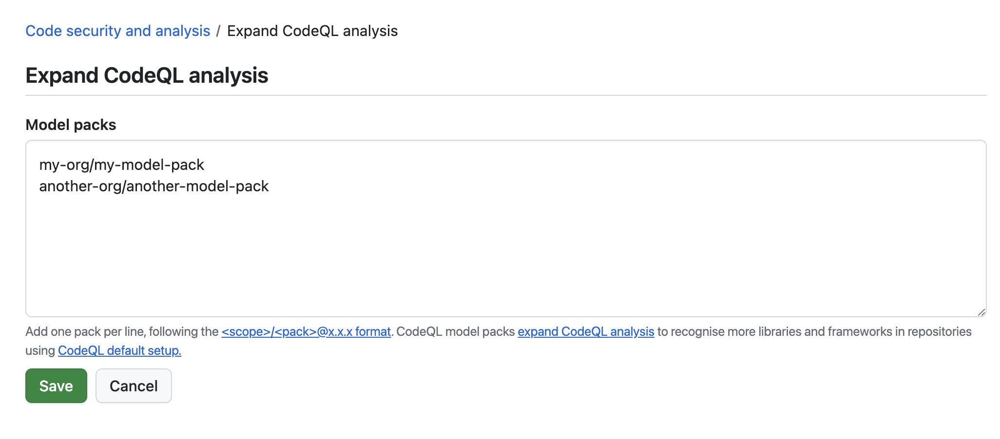

Customizing your existing configuration of default setup
On GitHub, navigate to the main page of the repository.
Under your repository name, click Settings. If you cannot see the "Settings" tab, select the dropdown menu, then click Settings.
In the "Security" section of the sidebar, click Advanced Security.
In the "CodeQL analysis" row of the "Code Security" section, select , then click View CodeQL configuration.
In the "CodeQL default configuration" window, click Edit.
Optionally, in the "Languages" section, select or deselect languages for analysis.
Optionally, in the "Query suite" row of the "Scan settings" section, select a different query suite to run against your code.
Optionally, to use labeled runners, in the "Runner type" section of the "CodeQL default configuration" modal dialog, select Standard GitHub runner to open a dropdown menu, then select Labeled runner. Then, next to "Runner label," enter the label of an existing self-hosted or GitHub-hosted runner. For more information, see Configuring default setup for code scanning.
(Public preview) Optionally, in the "Threat model" row of the "Scan settings" section, select Remote and local sources. This option is only available for repositories with code in a supported language: Java/Kotlin and C#.
To update your configuration, as well as run an initial analysis of your code with the new configuration, click Save changes. All future analyses will use your new configuration.
Defining the alert severities that cause a check failure for a pull request
You can use rulesets to prevent pull requests from being merged when one of the following conditions is met:
A required tool finds a code scanning alert of a severity that is defined in the ruleset.
A required tool's analysis is still in progress.
A required tool is not configured for the repository.
Including local sources of tainted data in default setup
Note
Threat models are currently in public preview and subject to change. During the public preview, threat models are supported only by analysis for Java/Kotlin and C#.
If your codebase only considers remote network requests to be potential sources of tainted data, then we recommend using the default threat model. If your codebase considers sources other than network requests to potentially contain tainted data, then you can use threat models to add these additional sources to your CodeQL analysis. During the public preview, you can add local sources (for example: command-line arguments, environment variables, file systems, and databases) that your codebase may consider to be additional sources of tainted data.
Extending CodeQL coverage with CodeQL model packs in default setup
Note
CodeQL model packs are currently in public preview and subject to change. Model packs are supported for C/C++, C#, Java/Kotlin, Python, Ruby, and Rust analysis.
The CodeQL model editor in the CodeQL extension for Visual Studio Code supports modeling dependencies for C#, Java/Kotlin, Python, and Ruby.
If you use frameworks and libraries that are not recognized by the standard libraries included with CodeQL, you can model your dependencies and extend code scanning analysis. For more information, see Supported languages and frameworks in the documentation for CodeQL.
For default setup, you need to define the models of your additional dependencies in CodeQL model packs. You can extend coverage in default setup with CodeQL model packs for individual repositories, or at scale for all repositories in an organization.
In the .github/codeql/extensions directory of the repository, copy the model pack directory which should include a codeql-pack.yml file and any .yml files containing additional models for the libraries or frameworks you wish to include in your analysis.
The model packs will be automatically detected and used in your code scanning analysis.
If you later change your configuration to use advanced setup, any model packs in the .github/codeql/extensions directory will still be recognized and used.
Extending coverage for all repositories in an organization
Note
If you extend coverage with CodeQL model packs for all repositories in an organization, the model packs that you specify must be published to the GitHub Container registry and be accessible to the repositories that run code scanning. For more information, see Working with the Container registry.
In the upper-right corner of GitHub, click your profile picture, then click Organizations.
Under your organization name, click Settings. If you cannot see the "Settings" tab, select the dropdown menu, then click Settings.
In the "Security" section of the sidebar, click Advanced Security then Global settings.
Find the "Code scanning" section.
Next to "Expand CodeQL analysis," click Configure.
Enter references to the published model packs you want to use, one per line, then click Save.

The model packs will be automatically detected and used when code scanning runs on any repository in the organization with default setup enabled.